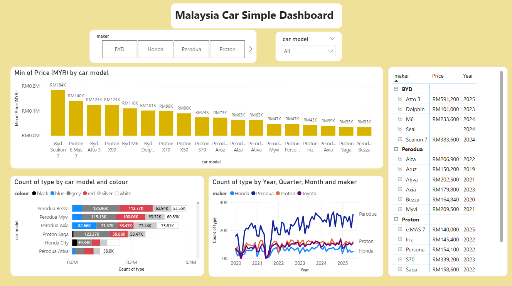

Malaysia Car Market Analytics Dashboard
Project Overview
This dashboard analyzes Malaysia’s automotive market using official car registration data from data.gov.my and car price data scraped using ChatGPT. The project demonstrates end-to-end data preparation, data modelling, DAX measure creation, and interactive visual storytelling with Power BI.
Maximum Car Prices by Model
The dashboard highlights the highest recorded prices across major manufacturers such as BYD, Proton, Honda, and Perodua. This helps users quickly identify premium models and understand how EVs, sedans, SUVs, and compact cars compare across price segments.
The pricing data also reveals how EV models (especially BYD) occupy the upper end of the price spectrum, showing the shift towards high-value electric vehicles entering Malaysia’s market.
Fuel Type & Colour Preferences
The dashboard presents a breakdown of car registrations by colour and, where applicable, fuel category (EV vs petrol). Key observations include:
- White, silver, and black remain the most dominant colours nationwide.
- EV models tend to favour neutral or futuristic colour themes.
- Compact cars show the widest colour variation, especially in Perodua models.
These insights help manufacturers and marketers better understand consumer preferences.
Trend Analysis by Year, Quarter & Month
Time-series visuals track how each car brand performs from 2020 to 2025. This includes monthly and quarterly seasonality patterns.
- Perodua leads consistently across all years, with strong peaks during promotional seasons.
- Honda and Proton show stable performance with noticeable increases during new model launches.
- BYD appears only in the more recent years, reflecting EV growth.
- End-of-year spikes suggest increased buying activity due to sales events and tax incentives.
Dashboard Summary: What You Can Explore
- Price comparisons across car models and brands
- Car colour popularity across Perodua, Proton, Honda, and BYD
- Trend lines showing the evolution of car registrations
- Interactive slicers to filter by brand and model
- Clean pricing table for reference
Detailed Pricing & Variants Table
The table on the right side of the dashboard provides a clean and structured view of car models, their prices, and the year released.
This allows quick cross-comparison between:
- New EV models (BYD Dolphin, Sealion 7, Atto 3)
- Popular compact cars (Axia, Bezza, Myvi)
- Proton’s recent lineup (Persona, S70, X50, X70)
- Honda’s mid-range sedan and hatchback models
Users can instantly spot price gaps and market positioning across brands.
Data Cleaning & Modelling Workflow
The project required extensive ETL and DAX work including:
- Normalising inconsistent car model names
- Cleaning missing and duplicated records
- Creating a DAX calendar table (Year, Quarter, Month)
- Merging registration data with scraped pricing data
- Building measures such as Min Price, Max Price, and Registration Counts
Tools, Techniques & Skills Showcased
This project demonstrates a full suite of data analytics skills:
- Power BI — interactive dashboards, DAX, modelling
- Power Query — ETL, data merging, transformation pipelines
- Data Storytelling — converting raw data into insights
- Web Scraping with ChatGPT — automated collection of car pricing data
- GitHub Pages — hosting analytics projects online
- Business Insight Interpretation — understanding market behaviour
Purpose of the Project
This dashboard was created to demonstrate my ability to work with real Malaysian automotive data, perform structured analysis, and communicate insights through a clean and interactive interface. It serves as a portfolio piece showcasing my technical, analytical, and storytelling strengths.